Examples#
Runnable examples over the MoveAtlas corpus, written as a researcher’s
toolkit: browse the catalogue by family, pathology or healthy cohort;
load records correctly (masks, channel tables, native rates); run a
complete cross-patient study with per-fold outputs and paired
statistics; and start descriptive science (cohort tables, activity
maps, lifespan comparisons) with one figure. Every page executes on the
real corpus at build time and downloads as .py and .ipynb.
The catalogue#
Browse the whole catalogue by family, pathology, healthy cohort and access case; the live count sits on the registry, never in this text.
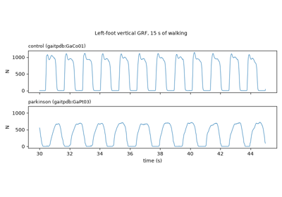
All the data for one pathology: a Parkinson tour
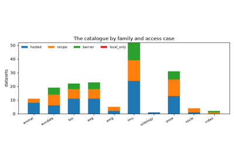
Explore the catalogue: families, pathologies, healthy cohorts, access
First look at the data#
Load real records, see them as DataFrames, plot every family’s raw signal.
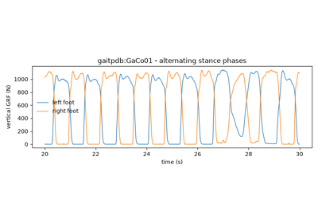
Force plates and insoles: the gait cycle in newtons
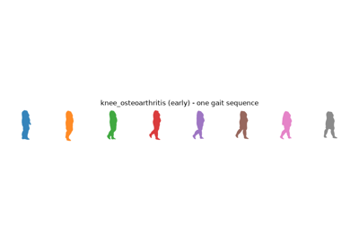
Silhouettes: the privacy-preserving face of clinical video
Data hygiene#
Masks, channel tables, native rates, stores: consume records correctly.

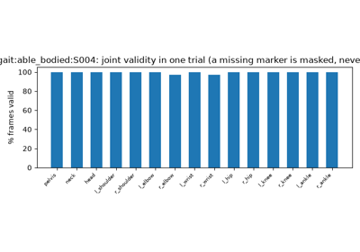
Consuming records correctly: masks, channel tables, native rates
Cohorts and subjects#
Patients vs controls, single-subject deep dives, Table-1 numbers.
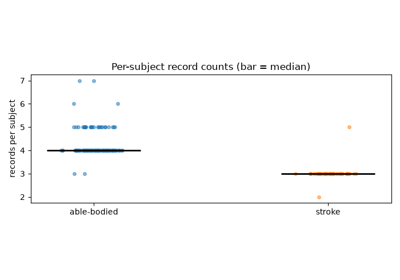
Patients and controls: cohorts, balance, and descriptive statistics
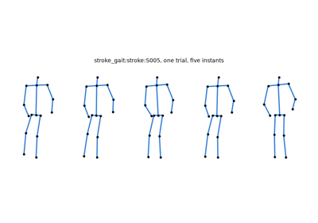
One patient, in depth: trials, trajectories, asymmetry
Cross-patient classification#
Standardized pipelines under leak-free patient-level evaluation.

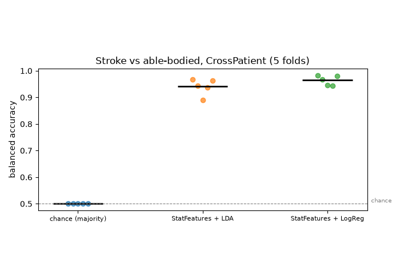
A complete cross-patient study: windows, pipelines, scores, statistics
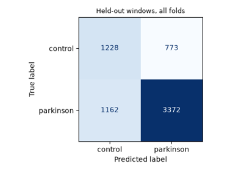
A second disease, the same recipe: Parkinson from ground-reaction forces
Signal analysis#
Spectra, joint angles, gait events, activity maps, distributions.
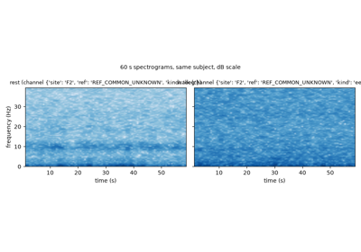
Time-frequency views: a walking EEG spectrogram
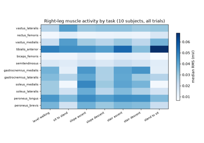
Muscle-by-task activity maps from a multimodal dataset
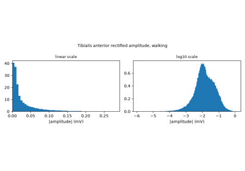
Amplitude distributions and when to log them
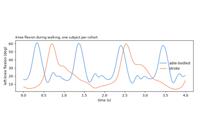
Joint angles from canonical skeletons: the knee, stroke vs able-bodied
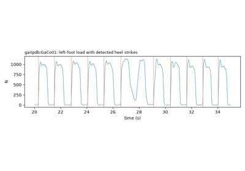
Gait events and stride-time variability: the classic Parkinson marker
Ready-to-run science#
Descriptive studies across cohorts, pathologies, scales and vocabularies.
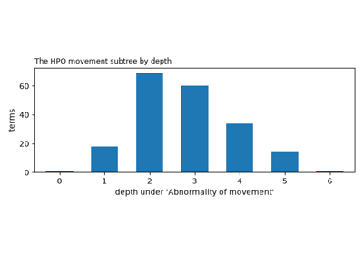
The label vocabulary: HPO movement terms mapped to the taxonomy
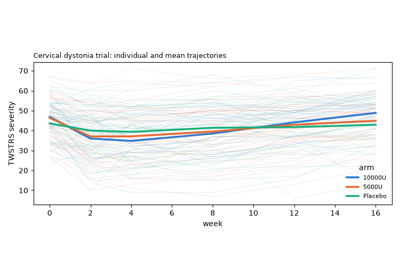
Clinical scales are data too: a botulinum-toxin trial in dystonia
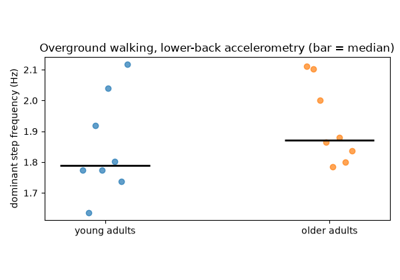
Descriptive science, ready to run: step frequency across the lifespan
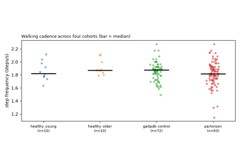
Four cohorts, one measure: cadence across health, aging and disease
Beyond the signal#
The catalogue’s other lanes on real data: invasive ECoG and deep-brain LFP, gene expression across the brain, and the genetics of movement disorders. No MRI appears here because none is on disk yet; everything shown is measured.
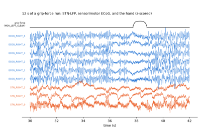
Inside the loop: ECoG and STN-LFP during a grip-force task
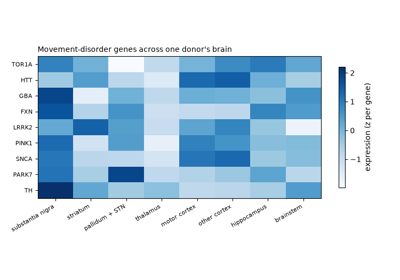
Where movement-disorder genes live in the brain
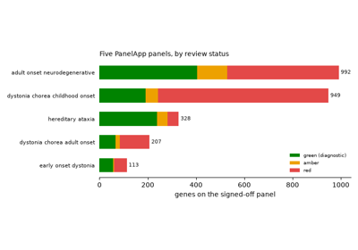
The genetic landscape of movement disorders
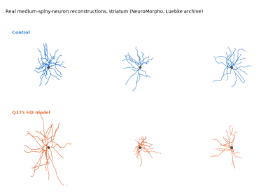
The diseased striatum in single neurons: Q175 Huntington model vs control